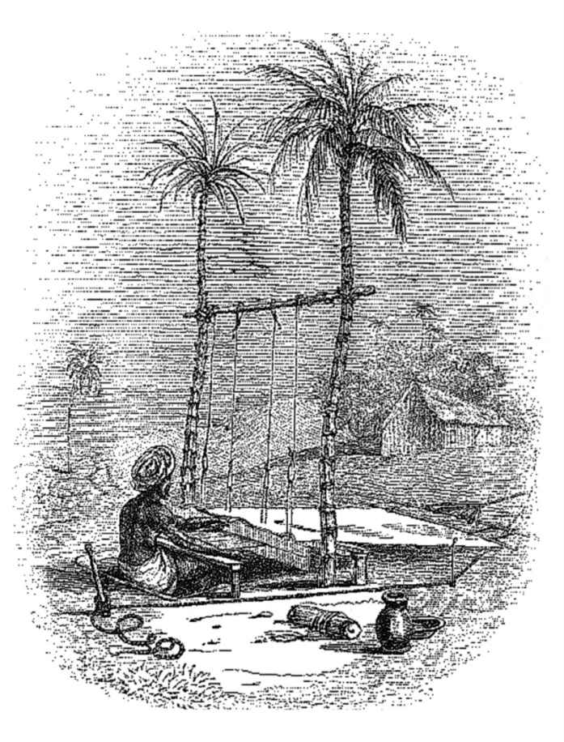

英国的智识影响刺激了印度思想、文化方面的高涨和创造力，这种高涨和创造力通常被称为印度复兴。要正确评价这一运动的意义，就应该注意到，当英国人出现时，印度教处于相当受压迫且混乱的状态。在穆斯林统治的前700年中，印度教受到轻视，被看作是一个从属种族的偶像崇拜的宗教。它缺乏威望、组织和积极的领导。但是，当英国人推翻莫卧儿的统治时，印度教700年来首次处于与伊斯兰教平等的地位。当英国人开办学校时，印度教徒与穆斯林大不相同，热切地成群涌向学校。如此，他们在两个方面得益：他们在新的官僚机构中担任职务，他们由于与西方的交往而再次激活了智识。

图220 19世纪早期印度的织布场景。
西方的刺激在印度教徒中间引起了三种反应或三种学派，不过，它们之间的界限并不明确，有着许多相一致的地方。第一种反应是全心全意、不加批判地亲西方、反传统：西方的一切都被认为是更优越、更可取的。
第二种反应是完全地拒绝。西方无可否认地是更强大的，然而，它的思想是颠覆性的，它的风俗是令人厌恶的。没有一个真正的印度人——无论他是印度教徒还是穆斯林——应该向这个邪恶的西方妥协。相反，他们应该尽量避免与外国人接触，应该以传统的方式过自己的生活。这种观点的支持者认为种姓统治是不可改变的，他们无保留地接受印度教经典的权威，并反对废除殉节风俗或杀婴风俗这类改革。
对西方的第三种、也是最通常的一种反应是居于崇拜和彻底拒绝之间的折中。它接受西方的世俗主义和知识的精华，但也试图从内部改革印度教，试图在摆脱印度教腐朽和粗俗的非人性做法的同时保持它的基本真理。这一学派的杰出领袖是被广泛地尊称为“近代印度之父”的拉姆·莫汉·罗伊。他于1772年出生于一个虔诚的婆罗门家庭，由于看到姐姐在丈夫的火葬柴堆上受折磨的场面，他与父母断绝了关系。他是一个不知足的学生，掌握了波斯语、阿拉伯语和梵语，然后又学习英语，进入政府部门任职。他被西方的思想和宗教强烈地吸引住，为了阅读《圣经》原文而学习希腊语和希伯来语。罗伊拒绝基督教的正式教义而接受它的人道主义启示。罗伊还向梵社（神社）——由他创立的一个新的印度教改良派——重新解释了印度教。梵社是欧洲启蒙运动学说与《奥义书》哲学观点的一个综合物。
印度人的印度
巴尔·甘加德哈·提拉克是印度早期的民族主义者，他要求英国人离开印度，并提出“印度人的印度”的口号。这种民族主义的感情在下面这一选自提拉克1906年演讲的片断中可以看得十分清楚。*
一个事实是这个外来的政府已毁了我们的国家。起初，我们都感到惊奇。我们几乎头晕目眩。我们本来以为统治者所做的一切都是为我们好，这个英国政府是从天而降，把我们从成吉思汗和帖木儿人的侵略中拯救出来，如他们所说的，不仅从外来的侵略中，而且从自相残杀的内战中拯救出来。我们有一段时间很高兴，但是，事情很快就很清楚，是这个国家建立的和平导致了这一切……——他们阻止我们自相残杀，这样外国人就可以杀我们所有的人了。在这个国家建立英国的和平和统治，是为了让外国政府剥削这个国家。如今，这种英国的和平和统治的效果正逐渐被人们意识到。不幸的是，我们没能更早地认识到这一点……英国的教育、不断增长的贫困和对统治者们的更加熟稔让我们和我们的领袖睁开了眼睛……你们的工业被彻底摧毁，被外国统治摧毁；你们的财富流出国外，你们的生活降低到没有人能忍受的最低水平。在这种情况下，你们还有什么其他良方可用来帮助自己吗？良方不是请愿，而是抵制。我们说，准备好你们的军队，组织好你们的力量，然后开始干吧，这样他们才不能拒绝你们的要求……每一个英国人都知道，他们在这个国家里只是一小撮；他们每一个人的事就是欺骗你们，让你们相信你们是软弱的，而他们是强大的。这就是政治。我们已被这种政策欺骗得太久了。新的政党要你们做的是，意识到这一事实：你们的未来掌握在自己手中……我们不会帮他们征税和维持和平。我们不会帮助他们用印度的鲜血和金钱在我们的疆界以外即印度外面打仗。我们不会帮助他们进行司法管理。我们会有自己的法院，而且，时候一到我们将不再交税。你们能联合起来这样做吗？如果你们能，从明天起你们就自由了……
* B. G. Tilak, His Writings and Speeches（Ganesh and Co.，1923）, pp. 55-67.
拉姆·莫汉·罗伊不仅是印度宗教复兴的先驱领袖，也是印度政治觉醒即民族主义运动的先驱领袖。民族主义运动在印度是一种新现象。以往，印度一向存在着文化统一和地区割据，但是，不存在全印度的爱国主义感情。民族主义能在英国的统治下发展起来，有着几方面的原因。一个原因在于英国人的“优越感”——英国人深信他们是种族的精华，由神注定要永久统治印度。这种种族主义在起义以后特别强烈，在各个方面显示出来——在军队和官僚机构中，印度人不论其条件如何，都不可能升迁到某些职衔以上；在社会生活中，印度人被拒绝在某些旅馆、俱乐部和公园之外。在这些情况下，印度人将会不可避免地反对这种逐渐形成的文化观念和民族意识。
英国人还由于他们强加于印度半岛的前所未有的统一而激发了民族主义。整个印度首次处于一个统治者之下。英国人还用他们的铁路、电报和邮政设施锻造了一种有形的统一。同样重要的还有，在采用英语作为受教育者的共同语言之后，出现了语言的统一。
英国的教育制度把西方的文学和政治思想整体引入印度，也促进了印度的民族主义。自由主义和民族主义的原则、个人自由和民族自决的原则，不可避免地变得对外来的英国统治不利起来。印度的领袖们不仅运用西方的政治原则，而且运用西方的政治技术。报纸、讲台上演说、编写小册子、群众集会、规模庞大的请愿——所有这些都被用作民族主义磨坊制粉用的谷物。
拉姆·莫汉·罗伊以他的政治、社会改革运动为印度的民族主义打下了基础。这第一代印度民族主义者是英国的赞赏者和合作的提倡者。但是，1890年以后，这些“温和派”受到由“印度革命之父”巴尔·甘加德哈·提拉克（1856—1920年）领导的极端派的挑战。提拉克是一个斗志昂扬的战斗者，他试图把民族主义事业从上层阶级的运动改变为人民群众的运动。这也许可以解释他为何顽固支持印度教的许多社会习俗。他甚至还组织了一个母牛保护会，并支持童婚。但同时，他也为工人的法定最低工资、工会组织的自由、平民军队的创立、普选权以及没有性别差别的自由义务教育而奋斗。提拉克以“教育、鼓动、组织”“好战，不要行乞”和“自由是我与生俱来的权利，我将得到它”之类的口号在全国赢得了追随者。
19世纪90年代的一系列饥荒和瘟疫促使不满情绪增长，这一点帮助了提拉克的改革运动。1905年的俄国革命和同年日本对俄国的胜利也激起印度的战斗精神。后一事件特别振奋人心，被看作对西方优越论的驳斥。尽管这一民族主义运动很普遍，但它几乎只是一场律师、记者、教师和商人的中产阶级运动。这些人更熟悉的是约翰·斯图尔特·穆勒、赫伯特·斯宾塞和查尔斯·达尔文，而不是他们的乡村民众同胞的痛苦、不满和热望。很自然，民族主义领袖和未受教育的农民之间没有什么友好关系。这一鸿沟继续存在到战后时期才由莫汉达斯·甘地越过。甘地之所以取得成功，是因为他意识到其人民实质上的宗教观点。他宣传的不是抽象的政治观念，而是被他赋予了政治含义的宗教概念（见第三十八章第四节）。
总之，西方对印度的影响全然不同于它对俄国或中东的影响。在俄国的情况下，西方施加了决定性的文化和经济的影响，但是，俄国在政治和军事上仍然是强大和独立的。另一方面，近东在经济和军事上受到西方的支配，不过，出于战略上的原因，奥斯曼帝国设法将它的独立一直保持到第一次世界大战以前。形成对照的是，印度在18世纪后期和19世纪期间被英国彻底地征服。英国的统治在孟加拉维持了近两个世纪，在旁遮普维持了一个多世纪。面对欧洲文明中那些最吸引人的成分，印度人从来就没有挑拣的特权。它比亚洲其他任何主要地区更无选择地承受西方权力和文化的影响。
[推荐读物]
综述印度历史文献的著作有R. I. Crane所著的小册子The Hisotry of India：Its Study and Interpretation（Service Center for Teachers of History，1958）。原始资料集有W. T. de Bary所编的Sources of Indian Tradition（Columbia University出版社，1950）。非常宝贵的参考书是J. E. Schwartzberg所编的A Historical Atlas of South Asia（University of Chicago出版社，1978）。
好的印度通史的著作有：P. Spear所著的A History of India（Penguin出版社，1965）和S. Wolpert所著的A New History of India（Oxford University出版社，1982）。全面研究英国在印度的统治的著作有：R. P. Masani所著的Britain in India（Oxford University出版社，1961）；P. Woodruff所著的The Men Who Ruled India，2vols（Jonathan Cape出版社，1954—1955）；H. Furber所著的John Company at Work（Harvard University出版社，1951）和M. D. Lewis所编的反映各种观点的阅读材料集The British in India：Imperialism or Trusteeship（D. C. Heath出版社，1962）。
最详细地研究欧洲对印度的影响的著作是L. S. S. O’Malley所著的Modern India and the West（Oxford University出版社，1941）。关于印度的知识分子和民族主义者的倾向，见A. Seal所著的The Emergence of Indian Nationalism（Cambridge University出版社，1968）；B. T. McCully所著的English Education and the Origins of Indian Nationalism（Columbia University出版社，1940）；A. Ward所著的Our Bones Are Scattered：The Cawnpore Massacres and the Indian Mutiny of 1857（Henry Holt出版社，1997）；J. R. McLane所著的Indian Nationalism and Early Congress（Princeton University出版社，1977）和该作者的文献集The Political Awakening in India（Prentice Hall出版社，1970）。
[注释]
[1]Cited by E.Stokes, “The First Century of British Colonial Rule in India: Social Revolution or Social Stagnation,” Past & Present（February，1973）, p. 153.